捷克第二大城市-布尔诺
2020/5/20 21:45:42
详细介绍
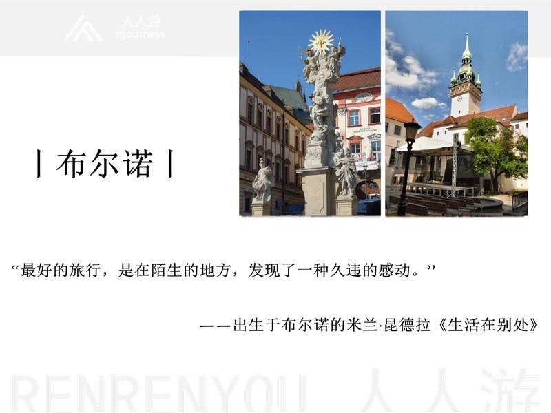
“遇见是两个人的事，离开却是一个人的决定，遇见是一个开始，离开却是为了遇见下一个离开。这是一个流行离开的世界，但是我们都不擅长告别。”——米兰·昆德拉《生活在别处》
也许就是这样一个地方，是梦，是艺术，是诗，它是作家米兰·昆德拉、数学家哥德尔、建筑师阿多夫·洛斯的出生地，也是生物学家孟德尔名留青史的豌豆遗传实验地，还是最早一批安装煤气街灯，启动电车服务的城市，这里曾经聚集着大量的德意志人。这是一个令人迷醉，让人追寻的地方，这里有成片的森林，翠绿的草场，清新的空气，田园的牧歌，波西米亚的浓郁风情……有人说，布尔诺，比布拉格更“捷克”。
1641年，布尔诺成为了摩拉维亚的首府，它位于捷克南摩拉维亚州高地东麓，斯夫拉特卡河和斯维塔瓦河汇合处，是捷克的第二大城市。这里有许多珍贵文化遗迹，在山丘城堡、教堂和博物馆，值得一提的是，由于历史的原因让这里山丘城堡成为了奥匈帝国最严酷的监狱。当然由于开发甚早，这里是铁路枢纽，同时机械工业发达，“国际机械工业博览会”定期在这里举行，因此，它也被誉为是“摩拉维亚的曼彻斯特”。
从布拉格出发，往东南方向行驶两小时便到达布尔诺，市内有诸多古城堡，古老的教堂，古老的街道，最著名的地标当属圣彼得与圣保罗教堂，是捷克国家文化古迹，摩拉维亚南部最宏伟的建筑和该市的主要地标之一。
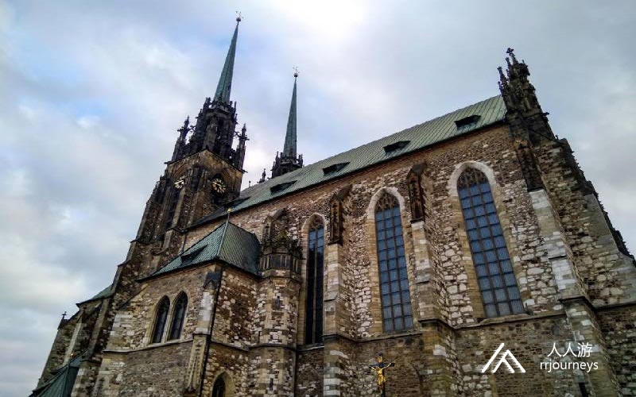
景点：圣彼得与圣保罗教堂
始建于15世纪，重建于19世纪后期。最突出的就是那两个84米高的塔楼，在城内各处都能看到，您可以登上塔顶，一览无余欣赏布尔诺的市景。这座教堂外观是哥特式风格，内部装修保留着浓郁的巴洛克风，值得一提的是，捷克10克朗硬币上的建筑就是这座教堂，由此可见该教堂在捷克的重要地位。
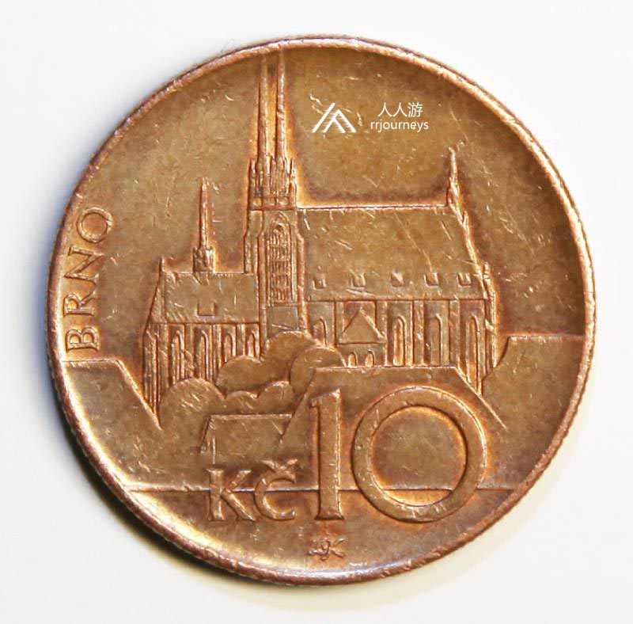
它有一个有趣的故事：圣保罗教堂每天上午11点就会敲响12下（传说17世纪，瑞典军队攻打布尔诺，扬言12点拿下，否则退兵。到11点，就要攻陷城市，敲钟人把11点敲成12点，而瑞典将军不察，遵守信诺就撤兵了。自此，教堂每天上午11点报时正午。）
景点：卷心菜广场
从圣彼得与圣保罗教堂的山坡走下来，就到了一个叫Zelny trh的广场，字面意思上看就是“白菜市场”。从中世纪开始这里一直是蔬菜市场，又叫“绿色广场”。这里有售卖水果、蔬菜、花卉等，一派悠闲的田园风。在广场的中央有一个看似洞穴状的喷泉，顶部是欧洲女神，中间是一个洞穴，里面是牵着三头兽的赫拉克勒斯雕像，这个带有浓墨的文艺复兴风的帕尔纳斯喷泉建于17世纪。
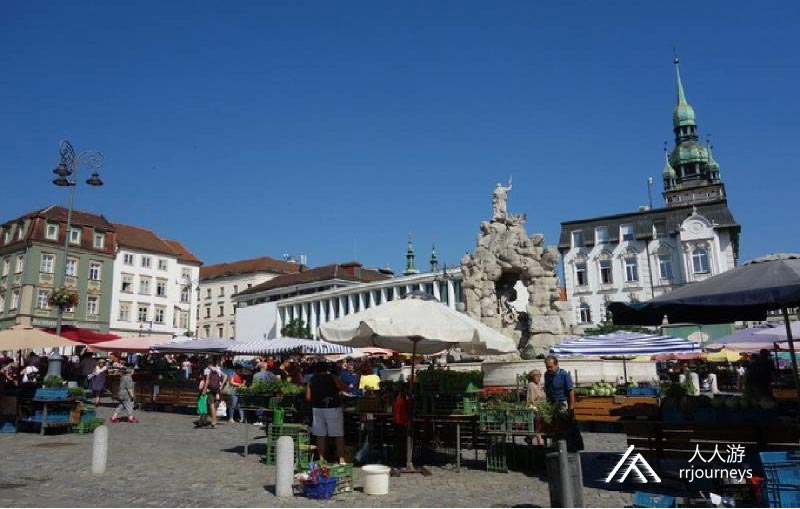
在广场的另一角有一个18世纪所建的黑死病纪念柱，广场周围是古建筑荟萃之地，主要的代表是特里赫斯特尼宫（现为摩拉维亚博物馆）和布尔诺剧院。
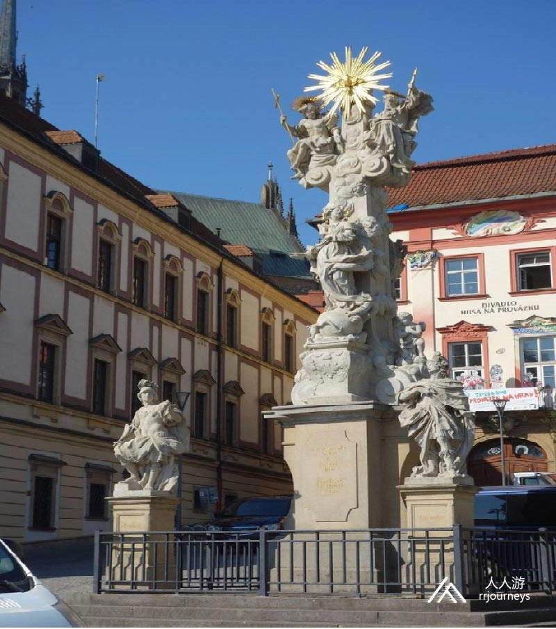
还有一个特别有意思的雕塑，位于布尔诺剧院门槛，一个黑色的少年时期莫扎特雕塑站在柱子顶端，这是为了纪念莫扎特11岁时来布尔诺剧院演出而立的雕塑。

景点：卡普钦地穴
从莫扎特雕塑往前走不远，便到了卡普钦小广场，这里有一个十分不起眼的小教堂，但是在这地下墓穴里陈列着数十具干尸，据说这些干尸都是17世纪中叶以来，修道院中的修道士死亡后，不是被装入棺材，而是放置通风的地下室，头上垫着石头自然风干，与木乃伊需要特别处理是不一样的。
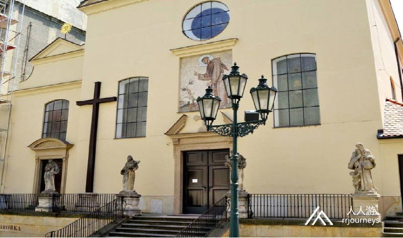
景点：旧市政厅
旧市政厅是布尔诺最古老的世俗建筑，可以追溯到1240年。他有一座可以攀爬的高塔，共173个台阶，是一个拍照的好地方，登上观景台可以看到布尔诺的全貌。
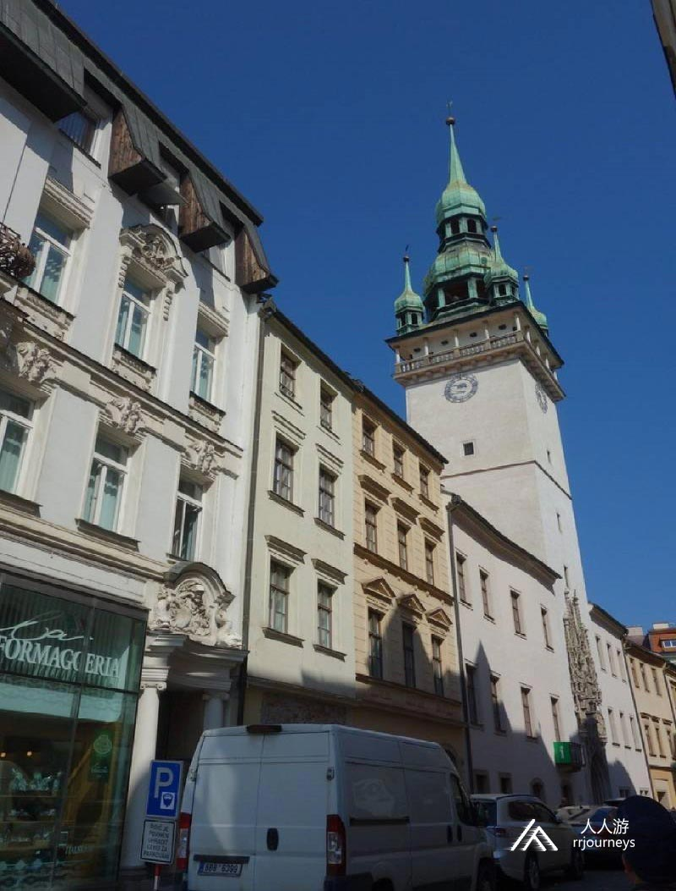
1510年，在拉德尼卡（Radnicka）上的塔楼上切出了一个门口，并由高贵的哥特式门框框起来。较低的位置装饰着骑士的雕像，上方装饰着骑士和镇长的雕像。中心是盲目的正义女神像。有趣的是，塔楼入口上方正中有五个石雕柱，正中间的石雕柱尖端歪了，据传为1511年建筑师未获得足够酬劳的报复。却没想到这个故意的失误成就了他的特殊之处。走出旧市政厅之前你会看到悬挂在天花板上的“龙”和“马车”，这是布尔诺市的象征。
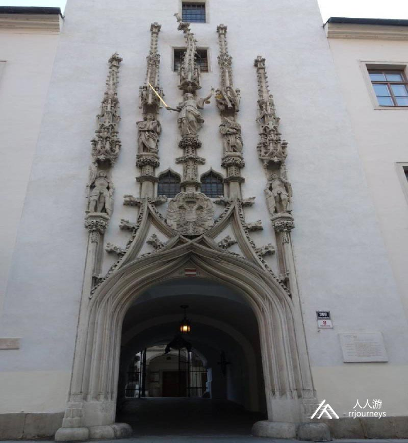
景点：自由广场
自由广场是布尔诺最繁华的商业区，在老城的中心，是一个少见的三角形广场。在这里除了服饰商品外您还能淘到波西米亚的水晶，咖啡馆、餐馆众多，琳琅满目的商品让您应接不暇。自由广场上最显眼的标志当属大型的黑死病纪念柱雕塑，柱顶上是圣母玛利亚的雕像。
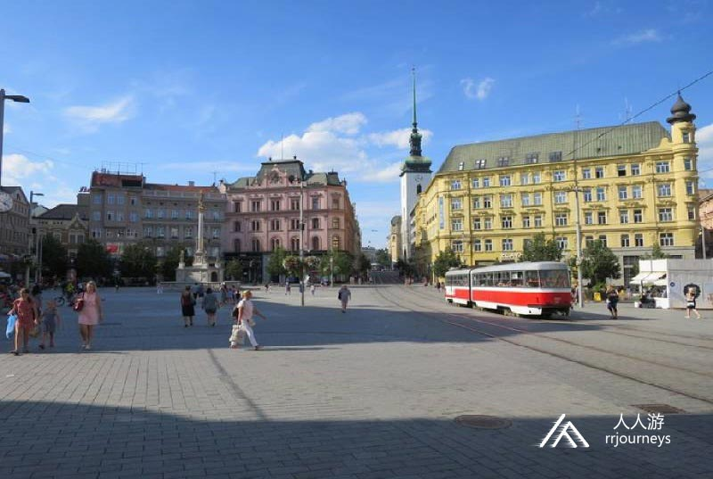
景点：布尔诺老城时钟
在自由广场上还有一座备受争议的艺术品，一座黑色的子弹头屹立在广场的东侧，它是为了纪念1645年瑞典三十万大军进攻时，瑞典将军放言在12点前拿下布尔诺，当时布尔诺市民为了保护后方当时的奥匈帝国首都维也纳，而想出奇招上山坡上的大教堂将时钟提前一小时，早上11点，教堂鸣钟， 瑞典军队误以为时辰已到，信守承诺而撤兵。
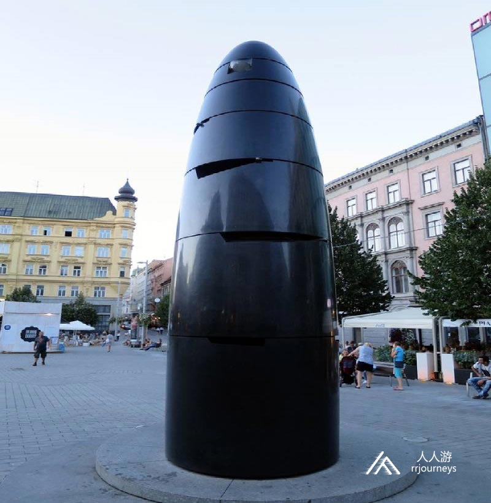
景点：利佩勋爵房屋
在自由广场的南边有一桌新古典主义风格的房屋，那是布尔诺在文艺复兴时期最美丽的房屋之一，利佩勋爵房屋始建于15世纪，是由意大利裔安东尼奥·加布里（Antonio Gabri）的建筑师在1589–1596年间为葡萄酒商人KryštofSchwanz建造的。重修于19世纪，这所房屋的所有者之一是路易斯·拉杜特·德·苏什（Luis Raduit de Souches），他是1645年反对瑞典人的城市捍卫者的指挥官。建筑的内部有一个拱廊，如今遍布着许多五彩斑驳的商店，以及信息中心和带屋顶露台的休闲咖啡馆和酒吧。
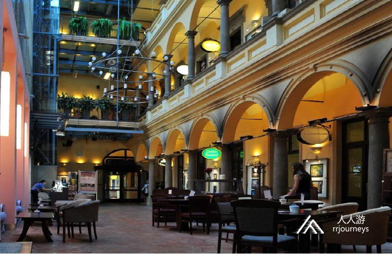
景点：圣雅各布教堂
离自由广场不远处有一座白色为主的建筑，那便是圣雅各布教堂，始建于13世纪，重修于19世纪，这座教堂和一般教堂不同之处在于，教堂高大的玻璃窗不是普遍的花窗，而是透明的，外墙全是白色，内部也是以白色为主，穹顶非常美，有很大的黑色管风琴，黑白两者相衬在一起，黑色的管风琴将白色的教堂衬托得更加端庄大气，显得庄严纯洁且特别的明亮。吸引游客之处在于它的地下万人冢地穴，据说地穴中藏有50000具尸骨，是欧州第二大的万人冢。

景点：图根哈特别墅
位于捷克城市布尔诺的图根哈特别墅，是捷克为数不多的世界文化遗产之一。1938年的建筑，今天看起来依旧很现代，各种现代化功能，风景也是绝佳。据说这是欧洲现代主义功用建筑的鼻祖，设计师是德国人。这里建筑个花园都值得参观，而且还是远眺布尔诺城的好地方。Ludvig Mies van der Rohe是这栋房子的建筑师-这是有史以来最杰出的建筑师之一。
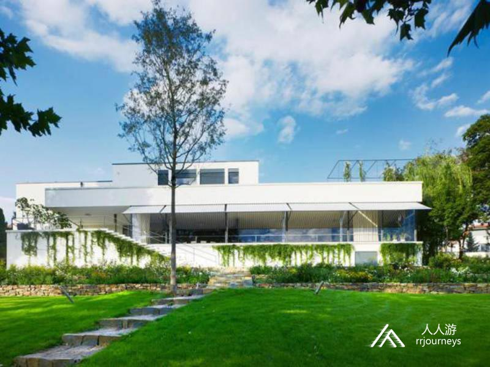
景点：斯皮尔博城堡
斯皮尔博城堡曾被称为“奥匈帝国最严酷的城堡”，它坐落在捷克南部摩拉维亚地区的布尔诺市的山顶上。这座古老的中世纪城堡是13世纪由Premyslid国王建造的。渐渐地，城堡变成了巴洛克式的堡垒，这就是我们今天能看到的，除了拥有护城河和堡垒的美丽的巴洛克式城堡外，你还可以参观古老的城堡，它在过去曾是一座监狱，被认为是整个奥匈帝国最严酷的监狱。这里有一个小餐馆/酒吧，你爬到山顶后可以看到城市的美丽景色。

景点：孟德尔博物馆
孟德尔博物馆位于圣托马斯修道院内，隶属于马萨里克大学(Masarykova univerzita / Masaryk University)。也许大家对孟德尔有些许的陌生，但是在中学时代生物课上老师一定说过“豌豆实验”是的，孟德尔就是在这里通过豌豆杂交实验，发现了遗传因子的分离定律以及遗传因子的自由组合定律，被誉为现代遗传学之父。在这个博物馆里保留着大量孟德尔研究时留下的手稿、记录和照片等，包括花园里也保留了孟德尔温室的砖石地基。
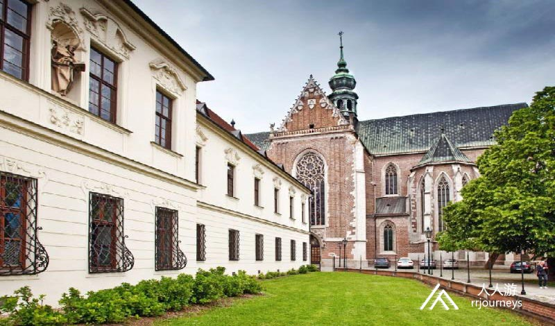
行走在这么一个有故事的城市里，当然美食也是旅行必不可少的选择，在布尔诺就恰有这么一个餐馆，无论是口味，还是环境，亦或是价格，它都满足您对味蕾的需求，在当地各种美食排行榜中均在前五行列，是您来布尔诺不可错过的美食。
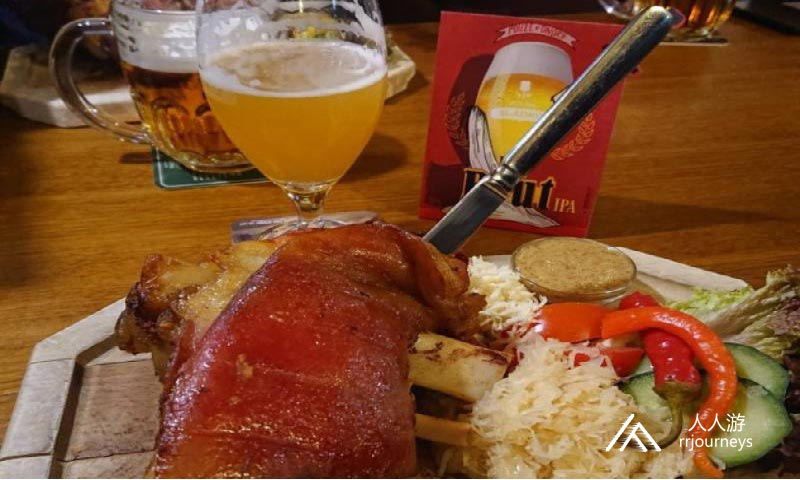
餐厅：StopkovaPlzeňskáPivnice
这所著名的啤酒屋一直是布尔诺捷克社会文化生活的支柱之一。19世纪下半叶以来，新主人杰洛斯拉夫·斯托卡（Jaroslav Stopka）的到来让这所啤酒屋变得更有名，他于1910年接管了最初的乔纳克（Jonak）啤酒屋。当初打的广告是“最好的布尔诺啤酒可以在这里喝。”
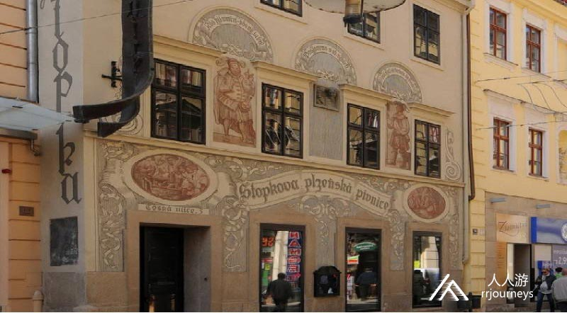
即使经过广泛的现代化改造，酒吧仍保留了其原来的特色和氛围。啤酒屋外墙是捷克画家拉瓦·诺瓦克所做，他是一位众所周知的布拉格波西米亚风格画家，让这家餐厅带着浓郁的波西米亚风。目前啤酒屋的主厨MatějKovacs推荐的特色菜是出色的迷迭香风味烤羊蹄。
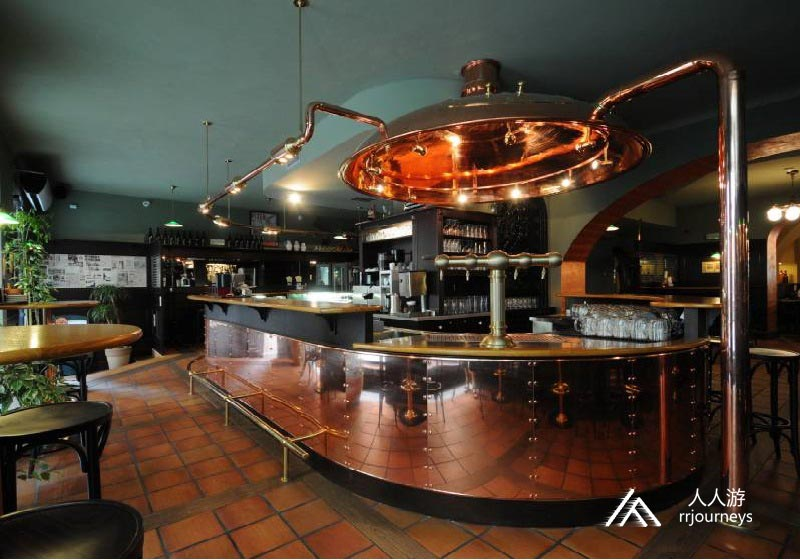
布尔诺的夜生活很早就上演，这里有诸多深藏在古老建筑里却有着浓郁现代风的酒吧，比如超级熊猫酒吧还有4个房间，每个酒吧就像一本藏在地窖里的书，值得你细细品味。
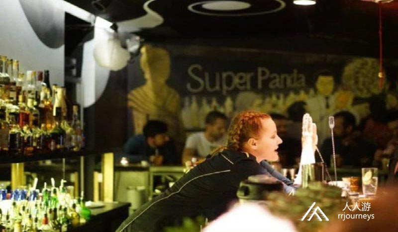